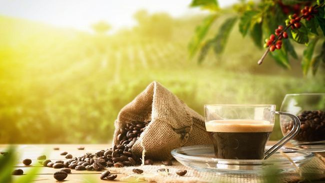

Mengenal KOPI
Kopi adalah minuman yang terbuat dari biji kopi yang disangrai dan digiling. Nikmati berbagai jenis kopi dari seluruh dunia! Kopi telah menjadi minuman favorit di berbagai kalangan dan hampir di seluruh negara.
Dunia perkopian telah mengalami perkembangan pesat dalam beberapa tahun terakhir. Mereka yang awalnya hanya menikmati kopi instan atau kopi tubruk di rumah, kini merambah ke kedai kopi untuk menikmati berbagai jenis kopi dari mesin espresso. Bagi pemula yang baru mulai mencintai kopi, artikel ini akan membantu Anda mengenal fakta dasar seputar kopi.
Mengapa Kopi Menjadi Favorit Banyak Orang?
Kopi adalah minuman berkafein yang digemari oleh banyak orang, dari kalangan anak muda hingga orang dewasa. Salah satu alasan utama adalah rasa nikmatnya yang menyegarkan badan. Kopi juga menjadi teman setia saat kita membutuhkan tambahan energi.
1. Rasa Nikmat yang Menyegarkan Badan

Aroma khas kopi yang wangi dan rasanya yang nikmat menjadikannya pilihan utama untuk menenangkan jiwa maupun pikiran. Bagi banyak orang, secangkir kopi bisa menjadi momen yang menyenangkan di tengah kesibukan.
2. Memiliki Karakteristik Rasa yang Menarik

Tidak hanya rasa yang nikmat, tetapi karakteristik rasa kopi sangat bervariasi. Beberapa orang menikmati kopi single origin dengan rasa rumit yang berbeda-beda, menjadikannya pengalaman yang menyenangkan untuk ditemukan.
3. Ingin Menenangkan Hati

Kopi dengan kandungan kafein cukup tinggi dapat membantu menenangkan suasana hati yang sedang kacau. Tanpa disadari, banyak orang yang menikmati kopi untuk meredakan stres dan mengembalikan mood.